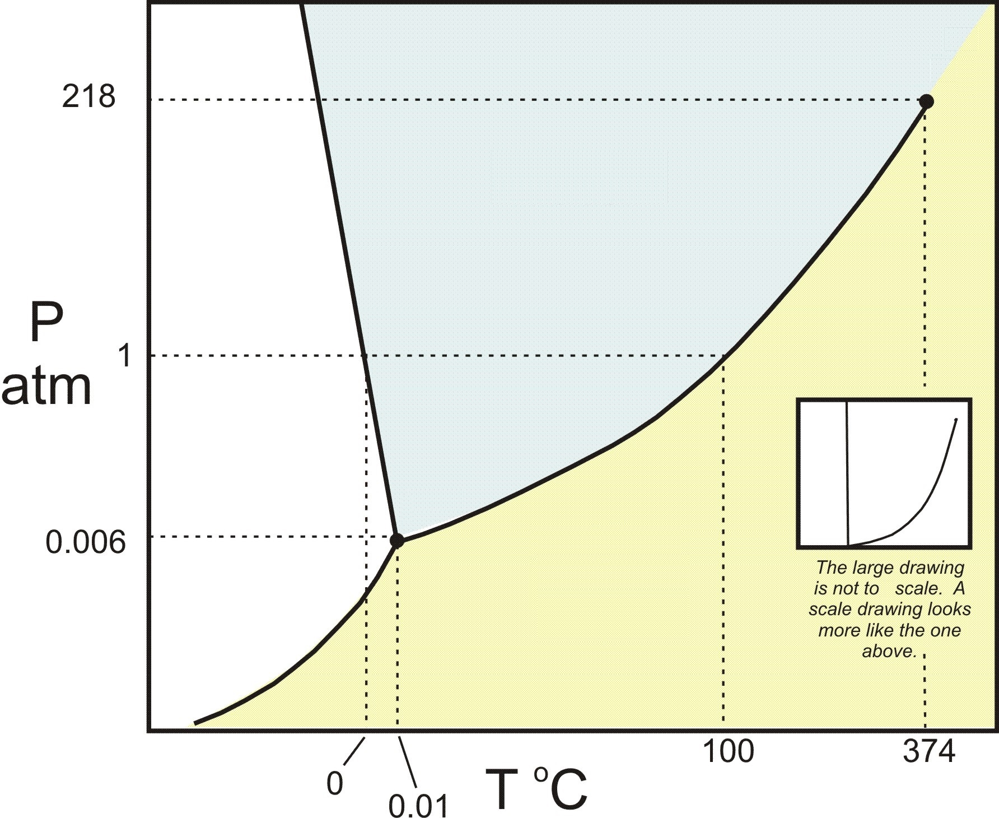

1) In which of the following figures is the adhesive force greater than the cohesive force?
A) The image labeled A
B) The image labeled B*
C) The image labeled C
D) None of the above.
When adhesive force is greater than the cohesive force the fluid will have a greater attraction to the side of the tube as it does other molecules in the fluid, so it will cause the meniscus to curve upwards on the sides, thus image B is the answer.
2) How much energy is required to heat 34.5 g H2O from a liquid at 41.1°C to a gas at 120°C? ΔHvap = 40.7 kJ/mol Cliquid = 4.184 \( \frac{J}{g°C} \) Cgas = 2.01 \( \frac{J}{g°C} \) Csolid = 2.09 \( \frac{J}{g°C} \) Tmelting = 0°C Tboiling = 100°C
A) 1410 kJ
B) 92.2 kJ
C) 9970 kJ
D) 87.8 kJ*
To calculate the energy required to heat water from a liquid at 41.1°C to a gas at 120°C, we need to consider the following steps:
Heating the liquid water from its initial temperature to its boiling point.
Vaporizing the liquid water at its boiling point to gas.
Heating the water vapor from it's boiling point to 120°C.
Step 1: Heating the liquid water First, we calculate the energy required to heat the liquid water from 41.1°C to its boiling point at 100°C.
q1 = m x Cliquid x ΔT1
where: q1 = energy required (in joules) m = mass of water (in grams) Cliquid = specific heat capacity of liquid water (in J/g-°C) ΔT1 = change in temperature (final temperature - initial temperature) Cgas = specific heat capacity of liquid water (in J/g-°C)
Given: m = 34.5 g Cliquid = 4.184 J/g-°C ΔT1 = 100°C - 41.1°C = 58.9°C
q1 = (34.5 g) x (4.184 J/g-°C) x (58.9°C) q1 ≈ 8500 (3 sf) J x \( \frac{1 kJ}{1000 J} \) = 8.50 kJ
Step 2: Vaporizing the liquid water Next, we calculate the energy required to vaporize the liquid water at its boiling point.
q2 = n x ΔHvap
where: q2 = energy required (in joules) n = number of moles of water ΔHvap = enthalpy of vaporization (in J/mol)
To calculate the number of moles of water, we use the molar mass of water (H2O), which is approximately 18.02 g/mol.
mol = 34.5 x \( \frac{1 mol H_2O}{18.02 g H_2O} \) ≈ 1.91 mol
Given: ΔHvap = 40.7 kJ/mol
q2 = (1.91 mol) * (40.7 kJ/mol) ≈ 77.9 kJ
Step 3: Heating the water vapor, we calculate the energy required to heat the water vapor from 100°C to 120°C.
q3 = m x Cliquid x ΔT2
where: q3 = energy required (in J) m = mass of water (in grams) Cgas = specific heat capacity of liquid water (in J/g-°C) ΔT1 = change in temperature (final temperature - initial temperature)
Given: m = 34.5 g Cliquid = 2.01 J/g-°C ΔT1 = 120°C - 100°C = 20.0°C
q3 = (34.5 g) x (2.01 J/g-°C) x (20.0°C) q3 ≈ 1390 J x \( \frac{1 kJ}{1000 J} \) = 1.39 kJ
Total energy required: The total energy required is the sum of q1, q2 and q3.
Total energy = q1 + q2 + q3 ≈ 8.50 kJ + 77.9 kJ + 1.39 kJ
Total energy ≈ 87.8 kJ
3) Which substance has the lowest intermolecular forces?
A) CH4*
B) CH3CH2CH3
C) CH3CH2CH2CH3
D) CH3CH3
CH3CH2CH2CH3 has the lowest intermolecular forces because it is the shortest hydrocarbon (with the lowest London dispersion forces).
4) What is the strongest type of intermolecular force present in NH3?
A) Hydrogen bonding*
B) Dipole-dipole forces
C) London dispersion forces
D) Ion-dipole forces
E) None of the above.
The strongest type of intermolecular force present in NH3 is hydrogen bonding, because NH3 has a hydrogen attached to a nitrogen.
5) Which of the following increases the rate of vaporization?
A) Strong intermolecular bonds
B) Decreasing temperature
C) Decreasing the surface area
D) Increasing temperature*
Increasing the surface area, weak intermolecular bonds, or increasing the temperature will lead to an increased rate of vaporization.
6) Which of the following would you expect to have the lowest surface tension?
A) CH3CH2CH2CH2CH2CH3
B) CH3CH2CH2CH2CH2CH2CH2CH3
C) CH3CH2CH2CH2CH3*
D) CH3CH2CH2CH2CH2CH2CH3
The shortest carbon chain will have the smallest London dispersion forces, thus the lowest surface tension.
7) Using the phase diagram below, what phase transition would occur if H2O was cooled from 45°C to -56°C at 0.005 atm? 
A) Condensation
B) Freezing
C) Sublimation
D) Deposition*
At 0.005 atm and 45°C the water would be a gas, but at 0.005 atm and -56°C it would be a solid. So the phase transition is deposition.
8) Identify the place which has the highest boiling point of water.
A) New Orleans, sea level
B) Death Valley, 282 feet below sea level*
C) Denver, Colorado, 5280 feet
D) Mt. Everest, 29,035 feet
The highest boiling point will be where the atmospheric pressure is the highest. Atmospheric pressure will be the highest at the lowest elevation.
9) Which of the following has the lowest viscosity?
A) IF5
B) Br2*
C) H2O
D) CH3CH2CH2OH
Br2 has the lowest viscosity, because it has the lowest intermolecular forces (only London dispersion forces). H2O and CH3CH2CH2OH can hydrogen bond. IF5 has dipole-dipole forces because it is an asymmetrical shape (square pyramidal).
10) Determine the normal boiling point (at 760 mm Hg) of a substance whose vapor pressure is 43.1 mm Hg at 35.8°C and has a ΔHvap of 33.7 kJ/mol.
A) 36.7 K
B) 253 K
C) 395 K*
D) 310. K
To determine the normal boiling point of a substance, we need to find the temperature at which its vapor pressure is equal to the atmospheric pressure at 760 mm Hg.
Given: T1: 35.8°C T2: ? P1: 43.1 mm Hg P2 = 760 mm Hg (normal pressure) ΔHvap = 33.7 kJ/mol R = gas constant (8.3145 J/mol·K)
To calculate the normal boiling point, we can use the Clausius-Clapeyron equation:
ln(P2/P1) = -(ΔHvap/R) * (1/T2 - 1/T1)
Converting the given values to K and J: T1: 35.8°C + 273.15 = 309 K ΔHvap = 33.7 kJ/mol = 33.7 × 1000J/1 kJ = 3.37x104 J/mol
Simplifying: ln(17.6) = -4050 K * (1/T2 - 1/309 K)
Now, let's solve for T2: -0.000708 K = (1/T2 - 1/309 K) -0.000708 1/K = 1/T2 - 1/309 K -0.000708 1/K + 1/309 1/K = 1/T2 0.00253 1/K = 1/T2
Taking the inverse of both sides: 395 K = T2
11) Choose the substance with the lowest ΔHvap.
A) CO2*
B) NaOH
C) SeF2
D) CH3OH
NaOH is an ionic compound. Ionic bonds are stronger than intermolecular bonds, so it will have the highest ΔHvap. CH3OH can hydrogen bond, thus would have the second highest ΔHvap. SeF2 is polar (dipole-dipole forces), thus would have the third highest ΔHvap. CO2 is non-polar (only London dispersion forces), thus would have the lowest ΔHvap.
12) What is the main reason why the boiling point of HF is much higher than that of HCl?
A) HCl can hydrogen bond whereas HF cannot
B) HF has dipole-dipole forces whereas HCl does not
C) HF can hydrogen bond whereas HCl cannot*
D) HF has stronger London dispersion forces than HCl
HF has a hydrogen attached to a N, O, or F, so it can hydrogen bond whereas HCl does not, so it cannot hydrogen bone. Hydrogen bonding gives HF a higher boiling point.
13) How much energy is required to vaporize 51.3 g of acetone (C3H6O) (58.08 g/mol) at its boiling point, if its ΔHvap is 29.10 kJ/mol?
A) 25.7 kJ*
B) 102 kJ
C) 0.883 kJ
D) 51.3 g x 1 mol/29.10g x kJ
51.3 g x 1mol/58.08g x 29.10 kJ/mol = 25.7 kJ
14) Which of the following 3 alkane isomers would you expect to have the lowest boiling point?
A) Pentane
B) Isopentane
C) Since they are isomers, they will have the same boiling point.
D) Neopentane*
Neopentane is the most branched alkane, so it will have the least surface area interacting for London dispersion forces. Thus it will have the lowest intermolecular forces and the lowest boiling point.
15) Choose the substance with the lowest vapor pressure at a given temperature.
A) SiS2
B) H2O*
C) H2S
D) O2
The chemical with the highest intermolecular forces will have the lowest vapor pressure. Since H2O can hydrogen bond, it will have the highest intermolecular forces, and the lowest vapor pressure. H2S is a polar molecule (dipole-dipole forces). SiS2 and O2 are nonpolar (only have London dispersion forces).
16) Place the following substances in order of decreasing boiling point. H2O N2 CO
A) H2O > CO > N2*
B) CO > N2 > H2O
C) N2 > CO > H2O
D) CO > H2O > N2
N2 only has London dispersion forces, so it has the lowest boiling point. CO is polar, so it has dipole-dipole forces H2O can hydrogen bond, so it will have the highest boiling point.
17) If three capillary tubes are dipped into water, which of the following images would most accurately represent the relative heights of the water level in the three capillary tubes?
A)
B)
C) *
D)
shows the thinnest tube with the highest height of liquid, and the widest tube with the lowest height of liquid, so it is the correct answer.
18) Which of the following statements is TRUE?
A) Forming new bonds requires energy
B) Decreasing the temperature of a liquid generally causes it to become a gas
C) Two bonded oxygen atoms are at a lower potential energy than two individual oxygen atoms*
D) London dispersion forces are generally stronger than dipole-dipole forces
It is true that two bonded oxygen atoms are at a lower potential energy than two individual oxygen atoms. Ionic and covalent bonds are stronger than intermolecular forces. Energy is required to break bonds, energy is not released when bonds are broken. Generally speaking, increasing pressure will cause a chemical to go from gas to liquid to solid (the exception being chemicals where the solid has a lower density than the liquid). Increasing temperature will cause a chemical to go from gas to liquid to solid.
19) (SLO 1.2) In fluoromethane CH3F, which intermolecular forces are present?
A) Only dipole-dipole and ion-dipole forces are present
B) Only London dispersion
C) London dispersion and hydrogen bonding
D) London dispersion and dipole-dipole*
fluoromethane CH3F is polar thus London dispersion and dipole-dipole forces are present.
20) (SLO 1.5) List the compounds below in decreasing boiling point order. CH3CH2CH2CH3 He CH3CH2CH2OH
A) He > CH3CH2CH2OH > CH3CH2CH2CH3
B) CH3CH2CH2CH3 > CH3CH2CH2OH > He
C) CH3CH2CH2OH > CH3CH2CH2CH3 > He*
D) CH3CH2CH2CH3 > He > CH3CH2CH2OH
CH3CH2CH2OH can hydrogen bond, so it will have the boiling point. CH3CH2CH2CH3 is a large nonpolar molecule, so it will have high London dispersion forces. He is small and nonpolar, so it will have a low amount of London dispersion forces, and have the lowest boiling point.